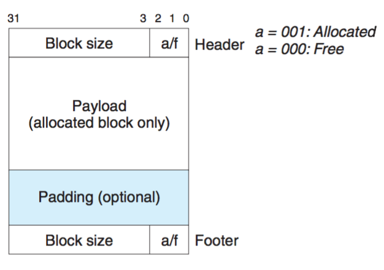
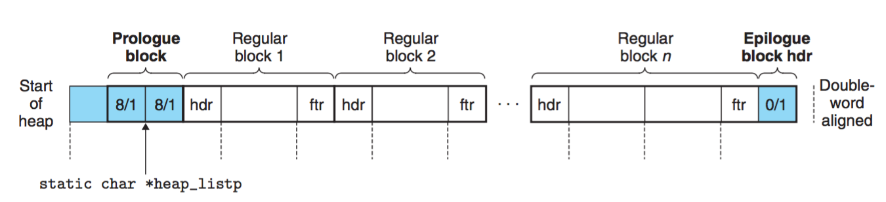
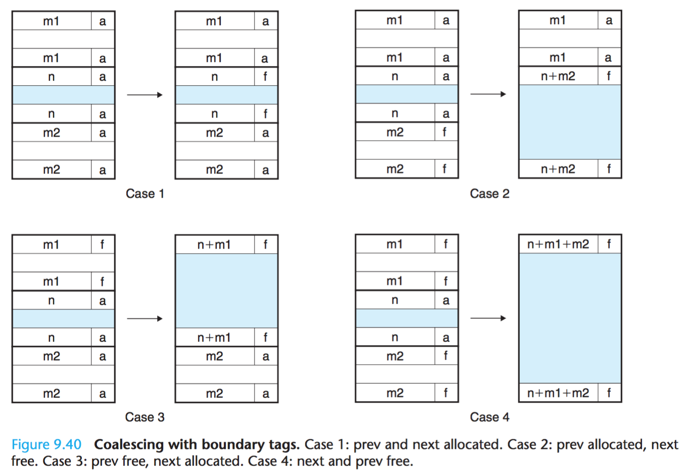

Malloc Lab，据说是最难的一个lab。在看完第九章之后，因为要旅游，没有直接做lab，而是继续看书，结果回来了，书还剩1章，又顺势看完了剩余的部分。在整本书都读完了以后，才回过头来做Malloc Lab。
介绍
需要完成mm.c里的内容，材料中需要完成的是
- int mm_init(void)
- void *mm_malloc(size_t size)
- void mm_free(void *ptr)
其他的mm_realloc源码中已经填写好了。
这里，我是用书中的隐式空闲链表方法，先完成实验。
mm_init
1 2 3 4 5 6 7 8 9 10 11 12 13 14 15 16 17
| * mm_init - initialize the malloc package. */ int mm_init(void) { if ((head_listp = mem_sbrk(4*WSIZE)) == (void *)-1) return -1; PUT(head_listp, 0); PUT(head_listp + (1*WSIZE), PACK(DSIZE, 1)); PUT(head_listp + (2*WSIZE), PACK(DSIZE, 1)); PUT(head_listp + (3*WSIZE), PACK(0, 1)); head_listp += (2*WSIZE); if (extend_heap(CHUNKSIZE/WSIZE) == NULL) return -1; return 0; }
|
这是一个初始化堆的函数。mm_init从内存中获取4个字的空间，并初始化城空闲链表。
其中堆块的形式是这样的

隐式空闲链表第一个字并没有用，这作为双字边界对齐的填充字。接着是prologue block，这和正常块的区别在于它没有payload，所以算是作为堆开始的标志，同样，epilogue block放在堆的结尾处。

上图为隐式空闲链表，每个regular block其实就上之前堆块图的结构。注意到蓝色的块是在初始化时产生的。mm_init就是做了以上的操作，首先调用mem_sbrk申请4个字的空间，首先第一个字填充为0。接着创建prologue block，因为prologue block是双字，也就是8-byte。接着创建epilogue block。接着将head_listp指针指向prologue block的结尾。虽然隐式空闲链表的头和尾都构建好了，但是没有分配空间给它，它限制并不能存任何东西。所以我们要对刚才的空闲链表进行扩展堆。默认扩展一个空堆CHUNKSIZE，这里定义的是1<<12也就是4K，4K也就是1000个字。
所以接着设计一个extend_heap函数。
extend_heap
1 2 3 4 5 6 7 8 9 10 11 12 13 14 15
| static void *extend_heap(size_t words) { char *bp; size_t size; size = (words % 2) ? (words+1) * WSIZE : words * WSIZE; if ((long)(bp = mem_sbrk(size)) == -1) return NULL; PUT(HDRP(bp), PACK(size, 0)); PUT(FTRP(bp), PACK(size, 0)); PUT(HDRP(NEXT_BLKP(bp)), PACK(0, 1)); return coalesce(bp); }
|
要知道内存块都是存在一种对齐机制，所以当分配奇数字时，要进行双字对齐。接着和初始化一样，调用mem_sbrk来获取空间。之后的内容和之前的mm_init类似，将bp所指的块的header和footer赋值为0，表示这个块是空闲块。将下一个块的header构造成epilogue block。
这里说个小插曲，为什么要双字对齐。我觉得是因为将最后一位留出来标记这个块是否被分配。只要是双字对齐后，那么这个数的二进制数最后一位肯定为0， 所以置为1代表已分配，置0代表未分配。如果不对齐，那么如果分配的是奇数，最后一位本来就为1，但若这个块并未分配，所以会影响判断。
在扩展完这个块以后，需要将这个块和之前的块进行合并。如果之前的块为空闲，则合并成更大的块来满足空间申请的请求。
coalesce
1 2 3 4 5 6 7 8 9 10 11 12 13 14 15 16 17 18 19 20 21 22 23 24 25 26 27 28 29 30 31 32 33
| static void *coalesce(void * bp) { size_t prev_alloc = GET_ALLOC(FTRP(PREV_BLKP(bp))); size_t next_alloc = GET_ALLOC(HDRP(NEXT_BLKP(bp))); size_t size = GET_SIZE(HDRP(bp)); if (prev_alloc && next_alloc) return bp; else if (prev_alloc && !next_alloc) { size += GET_SIZE(HDRP(NEXT_BLKP(bp))); PUT(HDRP(bp), PACK(size, 0)); PUT(FTRP(bp), PACK(size, 0)); } else if (!prev_alloc && next_alloc) { size += GET_SIZE(HDRP(PREV_BLKP(bp))); PUT(FTRP(bp), PACK(size, 0)); PUT(HDRP(PREV_BLKP(bp)), PACK(size, 0)); bp = PREV_BLKP(bp); } else { size += GET_SIZE(HDRP(PREV_BLKP(bp))) + GET_SIZE(FTRP(NEXT_BLKP(bp))); PUT(HDRP(PREV_BLKP(bp)), PACK(size, 0)); PUT(FTRP(NEXT_BLKP(bp)), PACK(size, 0)); bp = PREV_BLKP(bp); } return bp; }
|
合并块有4种可能的情况。

上面代码的顺序和上图的顺序是一致的。所谓合并，就是修改上一个或者下一个块的头和尾中的size。使之变成合并后的size。
mm_free
1 2 3 4 5 6 7 8
| void mm_free(void *ptr) { size_t size = GET_SIZE(HDRP(ptr)); PUT(HDRP(ptr), PACK(size, 0)); PUT(FTRP(ptr), PACK(size, 0)); coalesce(ptr); }
|
释放块，其实就是将头和尾的标志位修改为0，然后将这个块与前一个块或者后一个块合并。
mm_malloc
1 2 3 4 5 6 7 8 9 10 11 12 13 14 15 16 17 18 19 20 21 22 23 24 25 26 27 28 29 30 31 32 33 34 35
| void *mm_malloc(size_t size) { int newsize = ALIGN(size + SIZE_T_SIZE); void *p = mem_sbrk(newsize); if (p == (void *)-1) return NULL; else { *(size_t *)p = size; return (void *)((char *)p + SIZE_T_SIZE); } */ size_t asize; size_t extendsize; char *bp; if (size == 0) return NULL; if (size <= DSIZE) asize = 2 * DSIZE; else asize = DSIZE * ((size + (DSIZE) + (DSIZE-1)) / DSIZE); if ((bp = find_fit(asize)) != NULL){ place(bp, asize); return bp; } extendsize = MAX(asize, CHUNKSIZE); if ((bp = extend_heap(extendsize/WSIZE)) == NULL) return NULL; place(bp, asize); return bp; }
|
这算是最主要的部分了。分配内存主要分为对齐，最适搜索， 扩展堆。
对齐这个不难明白，就是如果申请的大小不是双字对齐，需要将其对齐，虽然这样会产生碎片。另外，参考之前的空堆结构可知，申请的空间最小要是16字节。其中8个字节存放头和尾，8个字节满足对齐要求。在调整了请求大小后，开始搜索空闲链表，寻找合适的空闲块。如果有，就放这个请求块，没有就需要申请新的空闲块来扩展堆,然后再放这个块。
这里用到了两个函数，find_fit和place，接着就要来完善这两个函数。
find_fit
1 2 3 4 5 6 7 8 9 10 11
| static void *find_fit(size_t asize) { void *bp; for (bp = head_listp; GET_SIZE(HDRP(bp)) > 0; bp = NEXT_BLKP(bp)){ if(!GET_ALLOC(HDRP(bp)) && (asize <= GET_SIZE(HDRP(bp)))) { return bp; } } return NULL; }
|
这里是用首次适配搜索。从隐式空闲链表的开头开始，寻找首个合适的未分配的块。
place
1 2 3 4 5 6 7 8 9 10 11 12 13 14 15 16
| static void place(void *bp, size_t asize) { size_t csize = GET_SIZE(HDRP(bp)); if ((csize - asize) >= (2*DSIZE)){ PUT(HDRP(bp), PACK(asize, 1)); PUT(FTRP(bp), PACK(asize, 1)); bp = NEXT_BLKP(bp); PUT(HDRP(bp), PACK(csize-asize, 0)); PUT(FTRP(bp), PACK(csize-asize, 0)); } else { PUT(HDRP(bp), PACK(csize, 1)); PUT(FTRP(bp), PACK(csize, 1)); } }
|
若是寻找到了合适的块，这时就要将这个块放进去。这里有两种情况，如果当前找到的块比需要填入的块大于或等于16字节，证明这个块还能够分裂成两个块，所以需要做分裂操作。不然就直接将这个整个块标记为已分配，也就是说这里存在小于16字节的碎片。
总结
隐式空闲链表可能说稍微容易点，得分87/100，这就证明其中有能够优化的地方，比如书中提到的显示空闲链表和分离链表，有机会我会再试试其他的方法，更巧妙的比如BST或者splay伸展树等等。